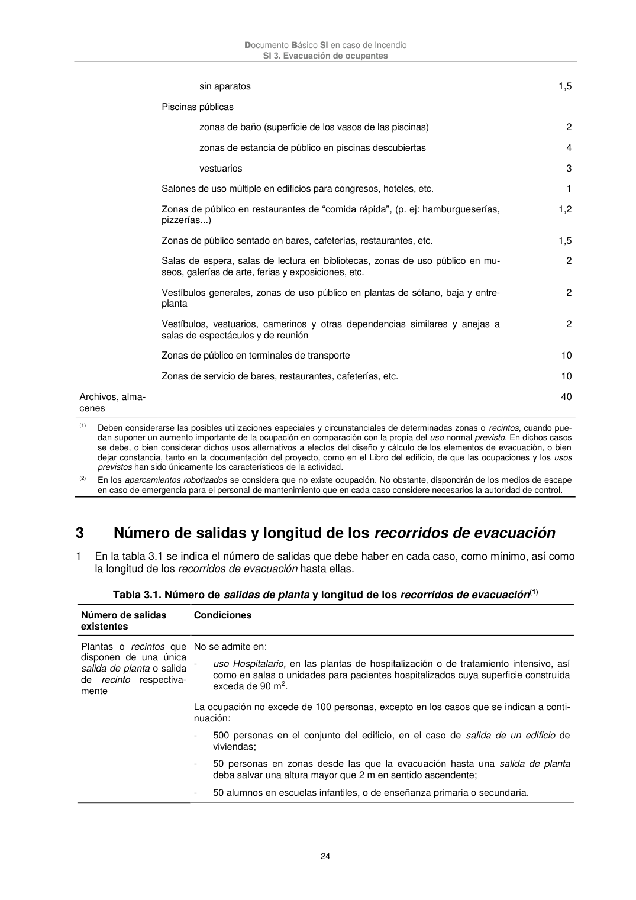

DB-SI · 3 Número de salidas y longitud de los recorridos de evacuación · versión 2025-03-04
SHA256: 0a2e78cd62471d9cc5cfe2efbc6aa39fdbad73c124aea7b039f9de96c141e105 · página física 24 de 92 · métodos de encabezado
solo si están cotejados.
Formatos: Markdown · JSON de bloques · PDF p. 24 · imagen PNG
Documento Básico SI en caso de Incendio SI 3. Evacuación de ocupantes 24 sin aparatos 1,5 Piscinas públicas zonas de baño (superficie de los vasos de las piscinas) 2 zonas de estancia de público en piscinas descubiertas 4 vestuarios 3 Salones de uso múltiple en edificios para congresos, hoteles, etc. 1 Zonas de público en restaurantes de “comida rápida”, (p. ej: hamburgueserías, pizzerías...) 1,2 Zonas de público sentado en bares, cafeterías, restaurantes, etc. 1,5 Salas de espera, salas de lectura en bibliotecas, zonas de uso público en mu- seos, galerías de arte, ferias y exposiciones, etc. 2 Vestíbulos generales, zonas de uso público en plantas de sótano, baja y entre- planta 2 Vestíbulos, vestuarios, camerinos y otras dependencias similares y anejas a salas de espectáculos y de reunión 2 Zonas de público en terminales de transporte 10 Zonas de servicio de bares, restaurantes, cafeterías, etc. 10 Archivos, alma- cenes 40 (1) Deben considerarse las posibles utilizaciones especiales y circunstanciales de determinadas zonas o recintos, cuando pue- dan suponer un aumento importante de la ocupación en comparación con la propia del uso normal previsto. En dichos casos se debe, o bien considerar dichos usos alternativos a efectos del diseño y cálculo de los elementos de evacuación, o bien dejar constancia, tanto en la documentación del proyecto, como en el Libro del edificio, de que las ocupaciones y los usos previstos han sido únicamente los característicos de la actividad. (2) En los aparcamientos robotizados se considera que no existe ocupación. No obstante, dispondrán de los medios de escape en caso de emergencia para el personal de mantenimiento que en cada caso considere necesarios la autoridad de control. 3 Número de salidas y longitud de los recorridos de evacuación 1 En la tabla 3.1 se indica el número de salidas que debe haber en cada caso, como mínimo, así como la longitud de los recorridos de evacuación hasta ellas. Tabla 3.1. Número de salidas de planta y longitud de los recorridos de evacuación(1) Número de salidas existentes Condiciones Plantas o recintos que disponen de una única salida de planta o salida de recinto respectiva- mente No se admite en: - uso Hospitalario, en las plantas de hospitalización o de tratamiento intensivo, así como en salas o unidades para pacientes hospitalizados cuya superficie construida exceda de 90 m2. La ocupación no excede de 100 personas, excepto en los casos que se indican a conti- nuación: - 500 personas en el conjunto del edificio, en el caso de salida de un edificio de viviendas; - 50 personas en zonas desde las que la evacuación hasta una salida de planta deba salvar una altura mayor que 2 m en sentido ascendente; - 50 alumnos en escuelas infantiles, o de enseñanza primaria o secundaria.
